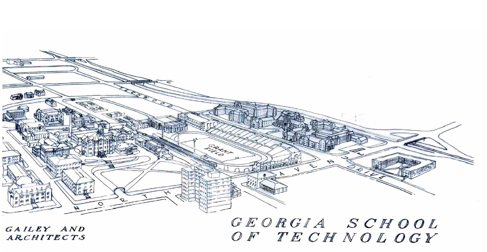
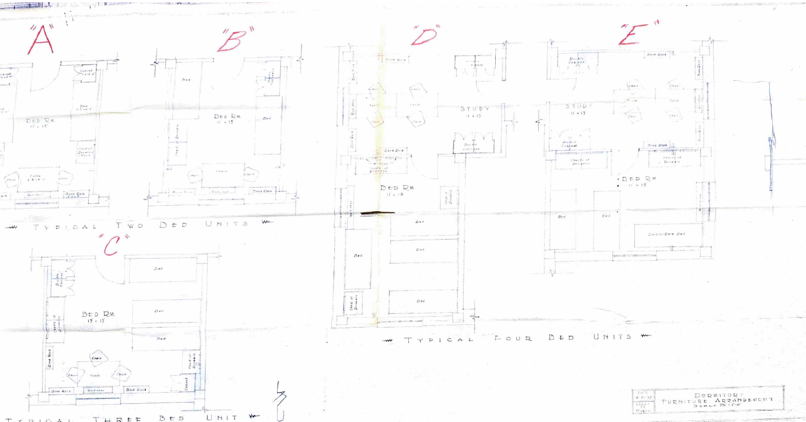

Then
East Campus was the center of student housing, with residence halls added over several decades as the Institute grew.
Building history
The halls where Georgia Tech housing began, and where nearly a century of campus life continues.
East Campus is where student housing at Georgia Tech began. Brown Hall opened in 1925, followed by Harris in 1926 and Cloudman in 1931. Harrison and Howell were built in 1939, with Towers and Glenn following in 1947. In 1961, five more halls joined the group: Field, Hanson, Hopkins, Matheson, and Perry.
For decades, these halls were the only place students lived on campus. Their traditional layout—rooms along shared hallways with communal bathrooms—remains a familiar part of the first-year experience.

In the 1960s, Georgia Tech began expanding west into the Hemphill Avenue neighborhood. Fulmer Hall opened in 1969 as the campus's first residence hall for women. Fitten and Montag followed in 1972. East Campus was no longer the only place for students to live.
Atlanta's 1996 Olympic Games reshaped campus housing. Georgia Tech added large apartment-style residences for visiting athletes, including North Avenue Apartments, expanding the university's housing capacity. The shift also gave older halls time to close for upgrades such as central air conditioning and updated interiors. Georgia Tech Housing and Residence Life looks back on that change.
Many East Campus halls are now approaching a century of use. Current renovation plans begin with Smith and Howell Halls, adding a new connector and street-level entrance. The architecture firm Ayers Saint Gross describes the broader effort as addressing 13 halls in need of renovation; Georgia Tech's campus construction update outlines the university's current work.

Renovating these buildings keeps their place in student life while adapting them to present-day needs. The choice to invest in the old halls, rather than simply replace them, makes preservation part of East Campus's continuing story.
East Campus was the center of student housing, with residence halls added over several decades as the Institute grew.
The halls remain part of student life alongside newer housing across campus. Renovation projects are updating them for future residents.

East Campus dorms have outlasted the move west, the 1996 Olympics, and the rise of apartment-style housing. Their continued use—and the work now underway to renew them—connects today's students to the earliest generations who called Georgia Tech home.